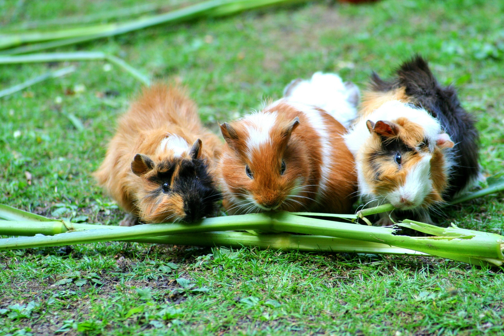

<!DOCTYPE html>
<html>

<head>
    <link rel="stylesheet" href="style.css" type="text/css">
    <link rel="icon" href="Bilder/logo-removebg-preview.png">
    <title>Kleintierzuchtverein Kuschelfreunde E.V.</title>
    <meta charset="utf-8">
    </meta>
</head>

</html>

<body>
    <div class="layout_1">
        <header class="header">
            <div class="container">
                <a href="home_de.html">
                    <div class="logo">
                        
                        <div class="logo_title">
                            <div class=logo_name>Kleintierzuchtverein</div>
                            <div class=logo_text>Kuschelfreunde E.V.</div>
                        </div>
                    </div>
                </a>
                <div class="spacer"></div>
                <div class="menu">
                    <a class="top_menu_item " href="home_de.html">
                        Über uns
                    </a>
                    <a class="top_menu_item " href="unsereTiere_de.html">
                        Unsere Tiere
                    </a>
                    <a class="top_menu_item top_menu_item_active" href="#">
                        Geschichte
                    </a>
                    <a class="top_menu_item " href="events_de.html">
                        Events
                    </a>
                </div>
            </div>
        </header>
        <section>
            <div class="spacer2"></div>
            <div class="bild_show_background ">
                
                <div class="bild_geschichte_textbereich absolute">
                    <h3 class="beitrag_wort">20.02.2017</h3>
                    <p>Jonas Angene wurde einstimmig zum neuen Vorstand gewählt.</br></br></p>
                    <h3 class="beitrag_wort"> 03.07.2018</h3>
                    <p>Paulina Phillips wurde zur Zuchtbeauftragten gewählt. Sie ersetzt damit Martin Becherer, der
                        dieses Amt seit 1966 inne hatte. </br></br></p>
                    <h3 class="beitrag_wort"> 2020</h3>
                    <p>Die Auwirkungen von den Lockdowns haben wir auch gemerkt. Viele Familien wollen gerade in den
                        schwierigen Zeiten sich Tiere anschaffen. Doch durch die Befürchtung, dass viele den Aufwand
                        einer Tierhaltung unterschätzen werden und wir in unserem Verein bestmöglich vor dem Virus
                        schützen wollen, hat sich der Vorstand dazu geeinigt, die Vermittlungen der Tiere bis auf
                        weiteres einzustellen. </p>
                    <h3 class="beitrag_wort"> 2021</h3>
                    <p> Zum 100 jährigen Jubiläum unseres Vereines sollte im Mai ein großes Fest stattfinden. Dies wurde
                        jedoch verschoben, bis sich die Lage mit dem Corona-Virus entspannt hat. </p>
                </div>
            </div>
        </section>
        <section class="languages">
            <div class="container">
                <a class="menu_item selected_language" onclick="button_toggle()">Deutsch</a>
                <a href='geschichte_lI.html' class="menu_item" onclick="button_toggle()">Lorem
                    Ipsum</a>
            </div>
        </section>
        <footer class="footer">
            <div class="container">
                <a href="home_de.html">
                    <div class="logo_footer">
                        
                        <div class="logo_title_footer">
                            <div class=logo_name_footer>Kleintierzuchtverein</div>
                            <div class=logo_text_footer>Kuschelfreunde E.V.</div>
                        </div>
                    </div>
                </a>
                <div class="spacer"></div>
                <button class="language_switcher" onclick="button_toggle()">
                    
                    
                </button>
            </div>
        </footer>
    </div>
    <script src="language_button.js"></script>
</body>